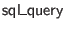
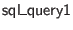
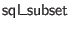
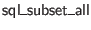
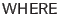
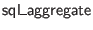

A final query is constructed via the  function. Constructor arguments respectively specify the unrestricted free table variables (which will only be available in subqueries), the free table variables that may only be mentioned within arguments to aggregate functions, table fields we select (as records mapping tables to the subsets of their fields that we choose), and the (always named) extra expressions that we select.
Queries are used by folding over their results inside transactions.
Most of the complexity of the query encoding is in the type  , which includes simple queries and derived queries based on relational operators. Constructor arguments respectively specify the unrestricted free table veriables, the aggregate-only free table variables, the tables we select from, the subset of fields that we keep from each table for the result rows, and the extra expressions that we select.
To encode projection of subsets of fields in clauses, and to encode clauses, we rely on a type family  , capturing what it means for one record of table fields to be a subset of another. The main constructor ``proves subset facts'' by requiring a split of a record into kept and dropped parts. The extra constructor  is a convenience for keeping all fields of a record.
SQL expressions are used in several places, including
,

,
, and
clauses. They reify a fragment of the standard SQL expression language, while making it possible to inject ``native'' Ur values in some places. The arguments to the
 type family respectively give the unrestricted-availability table fields, the table fields that may only be used in arguments to aggregate functions, the available selected expressions, and the type of the expression.
type family respectively give the unrestricted-availability table fields, the table fields that may only be used in arguments to aggregate functions, the available selected expressions, and the type of the expression.
Any field in scope may be converted to an expression.
There is an analogous function for referencing named expressions.
Ur values of appropriate types may be injected into SQL expressions.
Additionally, most function-free types may be injected safely, via the type family.
We have the SQL nullness test, which is necessary because of the strange SQL semantics of equality in the presence of null values.
As another way of dealing with null values, there is also a restricted form of the standard COALESCE function.
We have generic nullary, unary, and binary operators.
Finally, we have aggregate functions. The syntax is handled specially, since it takes no real argument. The other aggregate functions are placed into a general type family, using constructor classes to restrict usage to properly typed arguments. The key aspect of the  function's type is the shift of aggregate-function-only fields into unrestricted fields.
Most aggregate functions are typed using a two-parameter constructor class
which maps
 types to themselves and adds
types to themselves and adds
 to others. That is, this constructor class represents the process of making an SQL type ``nullable.''
to others. That is, this constructor class represents the process of making an SQL type ``nullable.''
Any SQL query that returns single columns may be turned into a subquery expression.
There is also an IF..THEN..ELSE.. construct that is compiled into standard SQL CASE expressions.
FROM clauses are specified using a type family, whose arguments are the free table variables and the table variables bound by this clause.
Besides these basic cases, outer joins are supported, which requires a type class for turning non-
 columns into
columns into
 columns.
columns.
Left, right, and full outer joins can now be expressed using functions that accept records of instances. Here, we give only the type for a left join as an example.
We wrap up the definition of query syntax with the types used in representing , , and clauses.
When using Postgres, SELECT and ORDER BY are allowed to contain top-level uses of window functions. A separate type family sql_expw is provided for such cases, with some type class convenience for overloading between normal and window expressions.